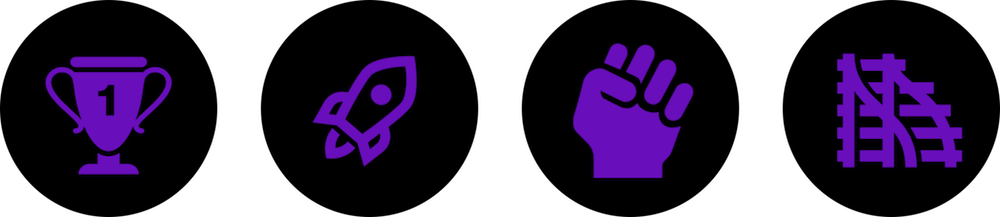

Über Ada's Salon
Die Vision dieser VR Experience ist, Informatiker*innen und ihre Errungenschaften sichtbar zu machen und einer breiten Öffentlichkeit vorzustellen, denn oftmals sind diese Informatiker*innen unbekannt oder in Vergessenheit geraten.
Dies hat auch direkte Auswirkungen auf die öffentliche Wahrnehmung der Informatik. Wir möchten zeigen, welche beeindruckenden Personen in der Informatik existierten oder in unserer Zeit wirken.
Wir haben Informatiker*innen mit sehr unterschiedlichen Hintergründen und aus verschiedenen Feldern der Informatik herausgesucht und ihre Geschichten spannend aufbereitet.
Die Icons
Es gibt verschiedene Themenräume, die durch Icons repräsentiert werden. Sie stehen für: Meilensteine, Raumfahrt, Aktivismus und Quereinsteiger*innen.
Über uns
Wir sind Almut, Małgorzata, Hatice, Malwine, Sylwia und Ulrike und studieren an der HTW Berlin.
Technologien
Die Ausstellung wurde mit A-Frame, React und Redux realisiert. Der Code der Ausstellung ist auf GitHub zu finden.
Danksagung
TonStudio Comart
Sounds von Freesound
Thanks to jobro for the Attention01 sound, usage under the Attribution License.
Icons von Icons8
Open Tech School